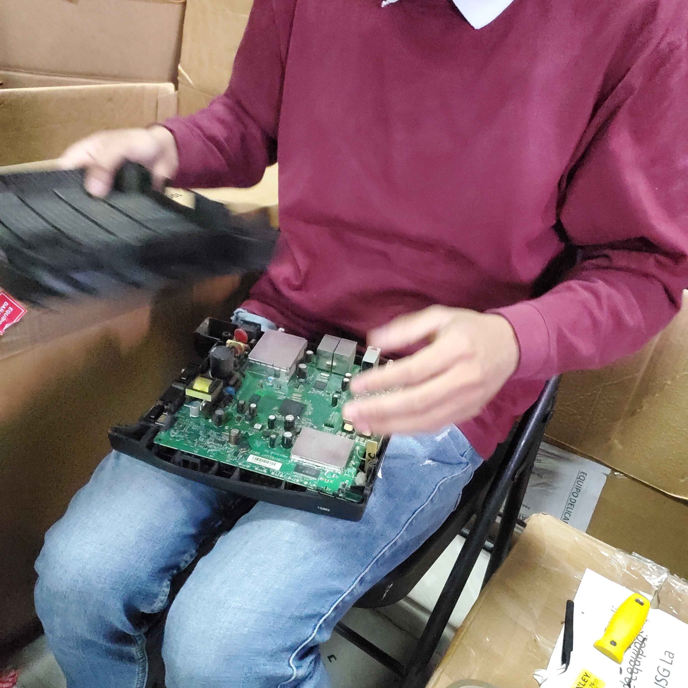

ISG
ISG
ISG
Esto se hace en los equipos recuperados que ya se revisaron
pero no funcionan correctamente, entonces se desarma para que
su carcasa sirva en otro equpo que tenga su carcasa mala;
Se desarma y se ponen las placas en un lado y las carcasas en otro
